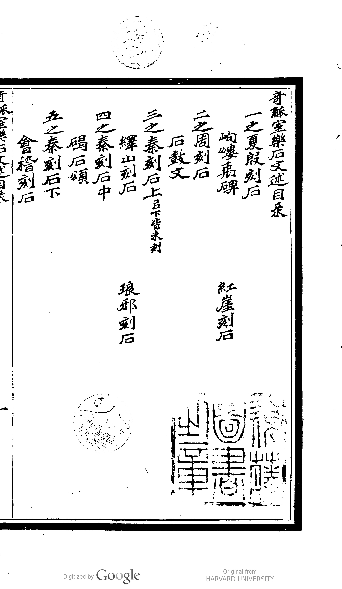
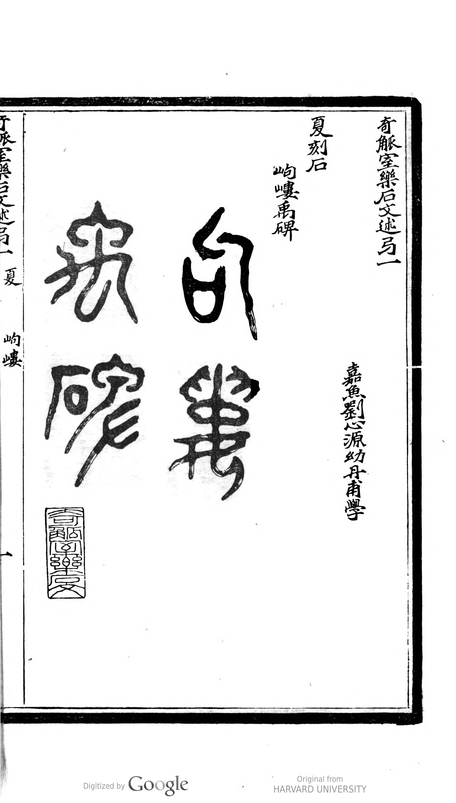
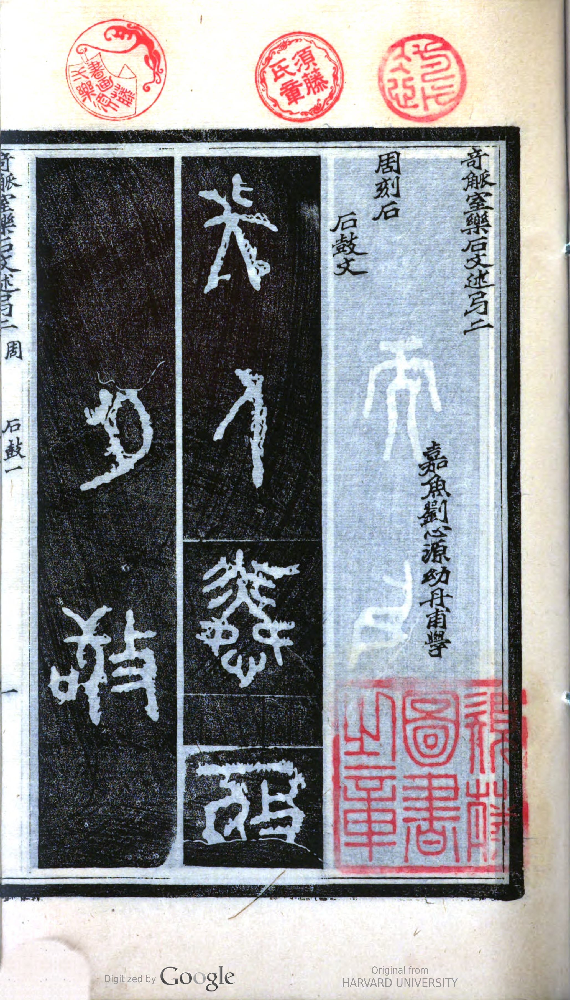
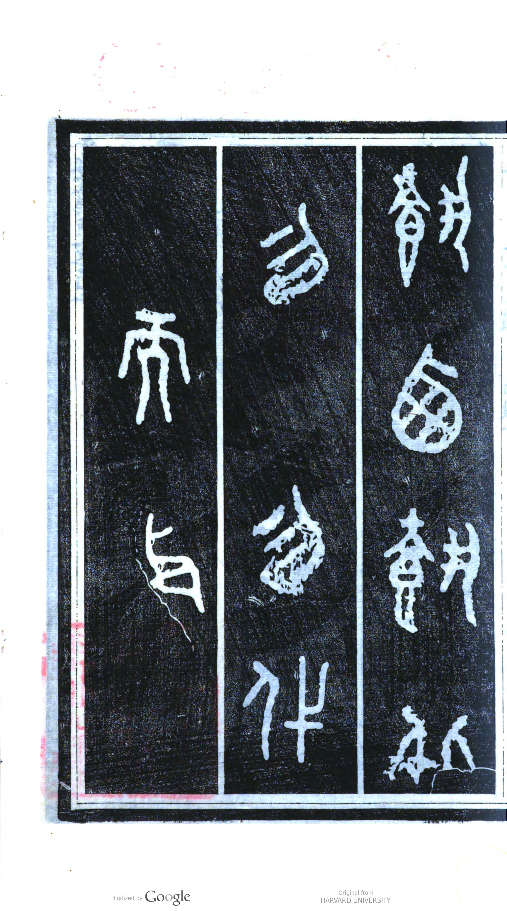
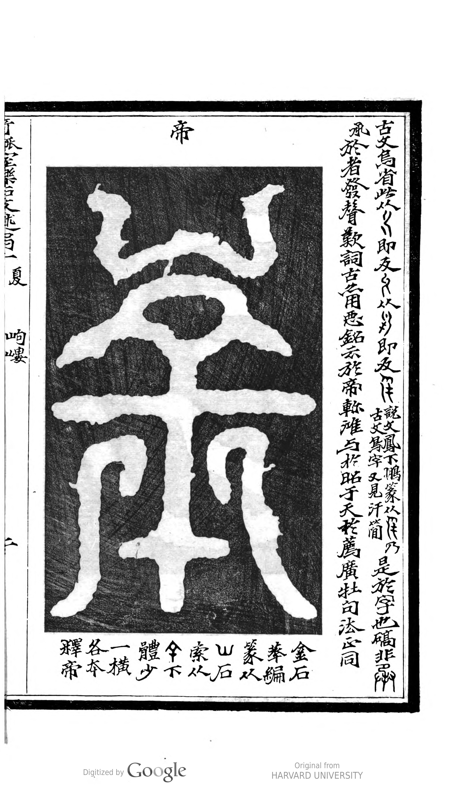

从神话符箓到帝国物证的证据链推演 (1899年刊本) Reconstructing Antiquity through Evidential Scholarship (1899)
刘心源的野心展现在全书的总目录中。这绝不仅仅是一本字帖，他按朝代编排（图97），试图用第一手拓片构建一部物质形态的中国文明史。 Liu Xinyuan's ambition is revealed in the master table of contents. This is no mere calligraphy copybook; organized chronologically (Image 97), it attempts to build a material history of Chinese civilization using firsthand rubbings.
卷一开篇的震撼： 极具争议的“岣嶁禹碑”（图101）。这种形如道教符箓的“鸟虫篆”，展现了晚清学者试图用极其严密的实证方法，为大禹治水等最古老神话寻找法理依据的极致尝试。 The shock of Volume 1: The highly controversial Goulou Stele (Image 101). This talismanic "Bird-Worm script" demonstrates late-Qing scholars' ultimate attempt to use rigorous empirical methods to find legal and historical proof for ancient myths like Yu the Great's flood control.



正如研究卷宗中所指出的，这本书本身无法回答它是如何流传的。但封面上刺眼的红色印章“须藤氏藏书”提供了关键线索。 As noted in the research dossier, the book itself cannot explain how it was transmitted. However, the striking red seal "Sudo Clan Collection" provides a crucial clue.
这本诞生于 1899 年大清帝国崩溃前夕的著作，承载着中国上古时期的政治与文化密码，跨越了战争与国界。今天，像你一样的 UCLA 学者能够通过数字终端对其进行考证，这本身就是书籍史（History of the Book）上一次跨越百年的完美闭环。 Born on the eve of the Qing Empire's collapse in 1899, this book carries the political and cultural codes of ancient China across wars and borders. Today, scholars at institutions like UCLA can examine it via digital terminals—a perfect century-long loop in the History of the Book.
这是《奇觚室樂石文述》的核心精华。点击下方缩略图，跟随刘心源的视线，体验考据学（Kaozheng）的严谨逻辑。 This is the core of the book. Click the thumbnails below to follow Liu Xinyuan's gaze and experience the rigorous logic of Evidential Scholarship (Kaozheng).

刘心源的考据本质上是一场极其硬核的“猜字游戏”。请观察高亮区域的象形特征，你能认出这是什么字吗？ Liu's scholarship is essentially a hardcore "character guessing game." Observe the pictographic features in the highlighted area. Can you identify the character?
